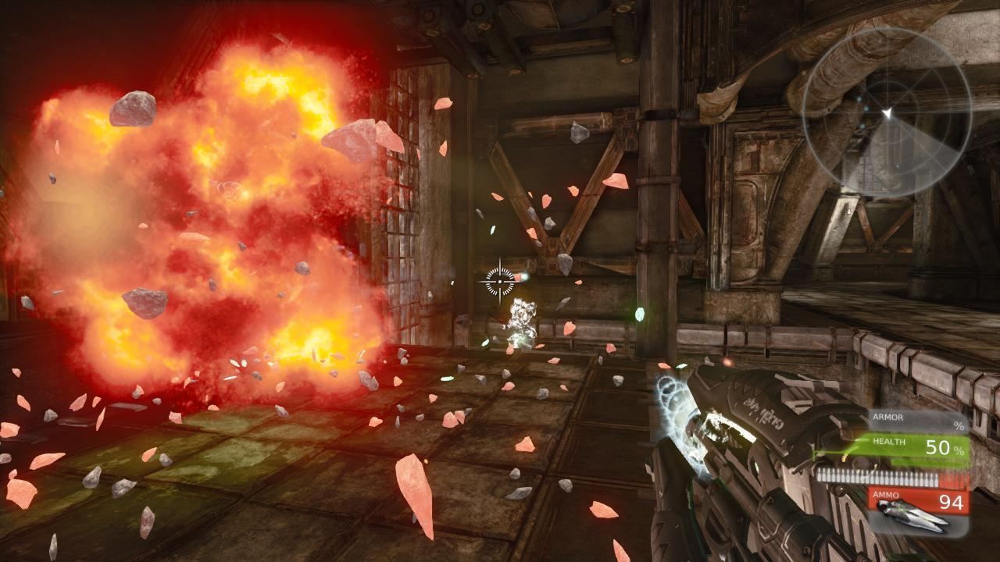
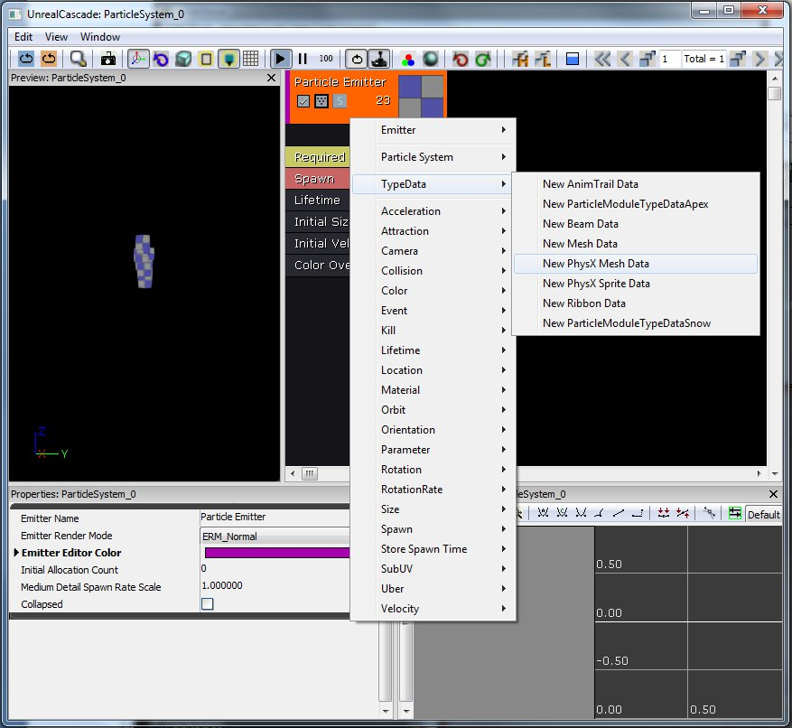
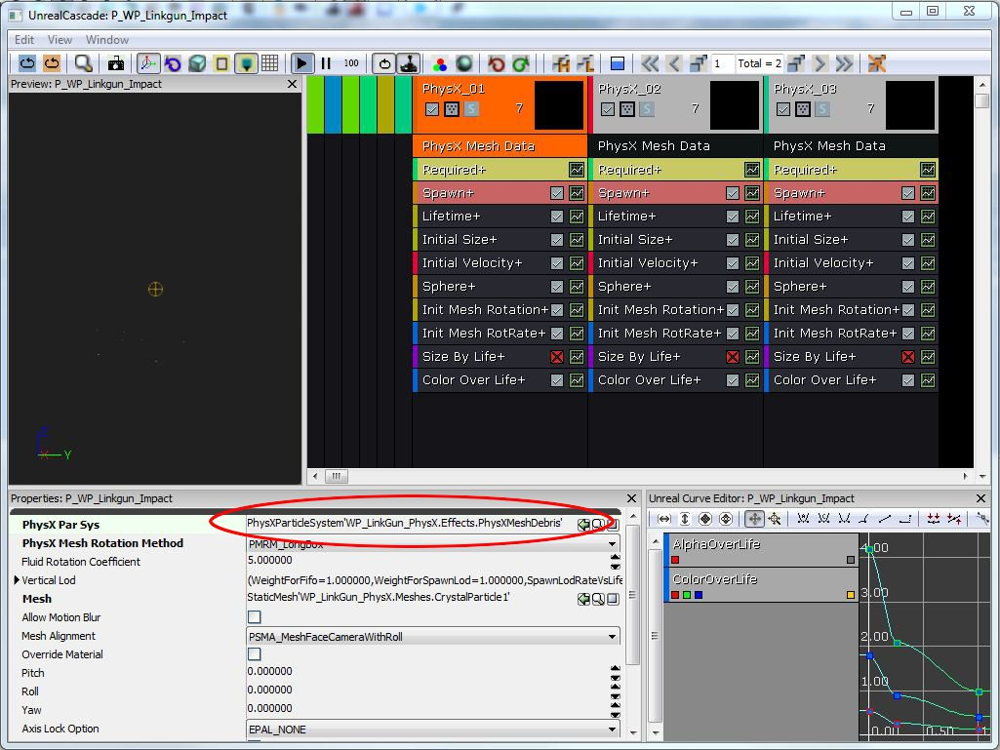
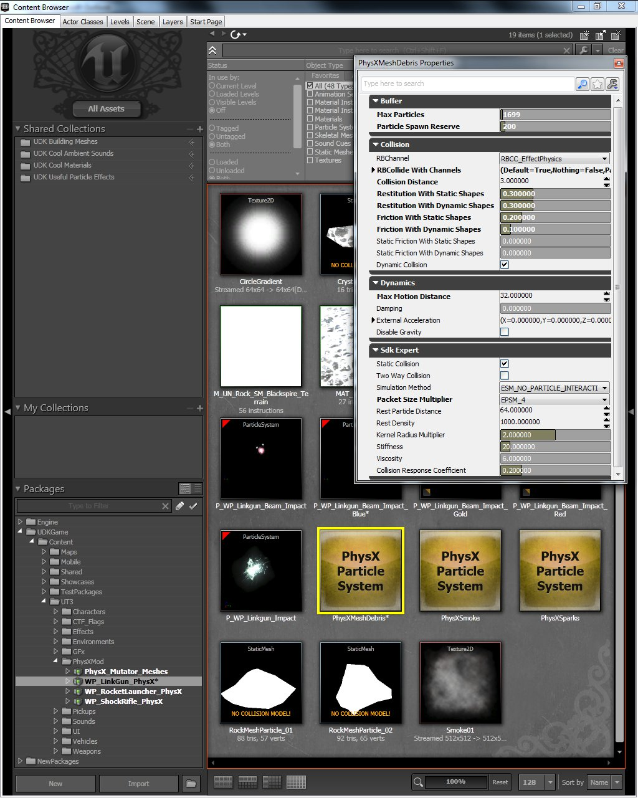
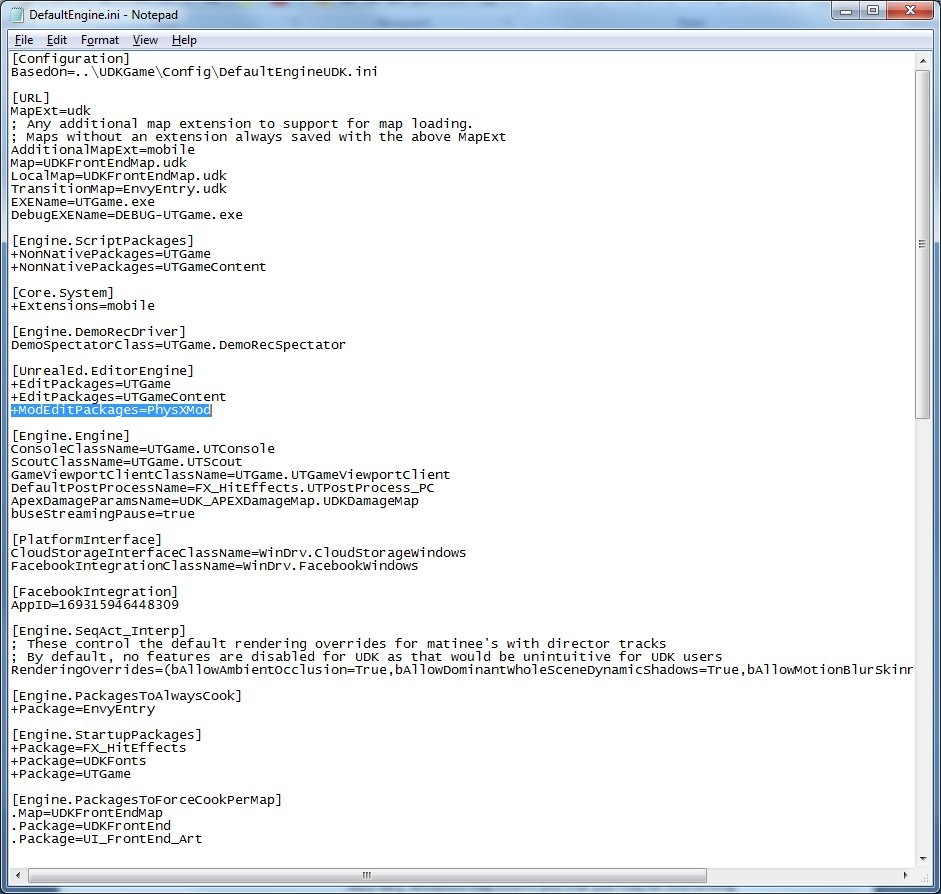
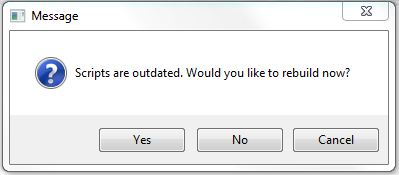
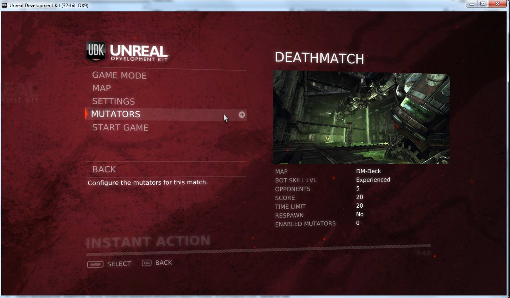
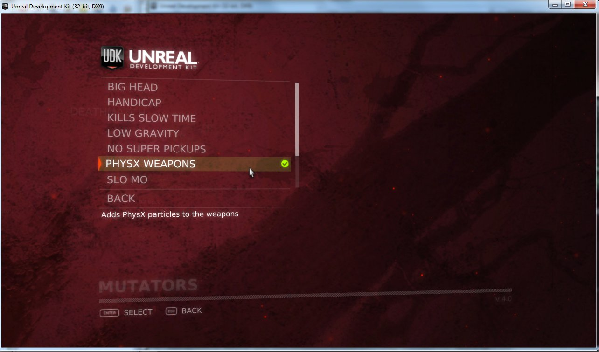

UDN
Search public documentation:
DevelopmentKitGemsPhysXParticlesStarterKit
日本語訳
中国翻译
한국어
Interested in the Unreal Engine?
Visit the Unreal Technology site.
Looking for jobs and company info?
Check out the Epic games site.
Questions about support via UDN?
Contact the UDN Staff
中国翻译
한국어
Interested in the Unreal Engine?
Visit the Unreal Technology site.
Looking for jobs and company info?
Check out the Epic games site.
Questions about support via UDN?
Contact the UDN Staff
UE3 Home > Unreal Development Kit Gems > PhysX Particles Starter Kit
UE3 Home > Getting Started: Programming > PhysX Particles Starter Kit
UE3 Home > Physics Home > PhysX Particles Starter Kit
UE3 Home > Getting Started: Programming > PhysX Particles Starter Kit
UE3 Home > Physics Home > PhysX Particles Starter Kit
PhysX Particles Starter Kit
Last tested against UDK November, 2011
Overview
This starter kit provides an example of adding PhysX Particles to the UTGame example provided with UDK. The technique in this document uses the Mutator functionality provided in UTGame. PhysX particles are unique in that they collide with the surrounding environment, increasing the realism of the special effects and adding to player immersion. 
What's included?
- PhysX particle versions of weapons effects - PhysX particles have been added to the following weapons
- Rocket Launcher - Red-hot rocks explode outward and cool as they come to rest on the ground
- Link Gun - Glowing green crystal shards burst from each impact from the primary fire, green sparks from the secondary fire
- Shock Rifle - Purple sparks from the primary fire
- PhysX Weapon Mutator (UTMutator_PhysXWeapons.uc) - Class which will replace existing weapons with the PhysX versions
- Weapons Replacement Map (DefaultPhysXMod.ini) - ini file that contains the mapping of old weapons to new weapons
- Drain (UTDrain.uc) - Placed in the level to catch any particles that may fall through the world
Content and Code Structure
How do I create a PhysX Particle System?
PhysX mesh particle systems are created in Cascade by creating a particle system and changing the TypeData to be New PhysX Mesh Data. In order to adjust the physical behavior of the particle system you will want to create a new PhysXParticleSystem and connect it to your emitter that is using the PhysX Mesh Data. Try to share the PhysXParticleSystem across several emitters as this is more efficient for simulation (e.g. rock and metal debris particles can probably both use the same PhysXParticleSystem).- Changing the data type to use PhysX:

- This is the location where you link your PhysXParticleSystem to your PhysX emitter:

- The physical parameters of the PhysXParticleSystem:

How do I connect my particle system to the weapon?
For this example we are using UTGame, which already has the weapons defined. You could change the original classes to make use of these particle systems, however, that would change the behavior of the original game. By using the Mutator functionality, we can turn the PhysX particle additions into a mod for players to enable if desired. The first thing we need to do is create a version of the weapon that uses the PhysX particle system. As an example we will look at the UTProj_RocketPhysX.uc file. You can see that this class derives from the original UTProj_Rocket.uc class and overrides the ProjExplosionTemplate in the defaultproperties section of the code. We will derive classes for other weapons and projectiles in this manner until we have connected all of our PhysX Particles systems.
class UTProj_RocketPhysX extends UTProj_Rocket;
defaultproperties
{
ProjExplosionTemplate=ParticleSystem'WP_RocketLauncher_PhysX.Effects.P_WP_RocketLauncher_RocketExplosion'
}
How do I make UTGame select my new weapons?
As we mentioned earlier we will be using the Mutator functionality to make this happen. There are a few key files involved.- The DefaultPhysXMod.ini contains a list of weapons and their replacements. This is where you will be specifying which original weapons you want to replace with your new version.
[PhysXMod.UTMutator_PhysXWeapons] WeaponsToReplace=(OldClassName="UTWeap_LinkGun",NewClassPath="PhysXMod.UTWeap_LinkGunPhysX") WeaponsToReplace=(OldClassName="UTWeap_RocketLauncher_Content",NewClassPath="PhysXMod.UTWeap_RocketLauncher_ContentPhysX") WeaponsToReplace=(OldClassName="UTWeap_ShockRifle",NewClassPath="PhysXMod.UTWeap_ShockRiflePhysX")
- The UTMutator_PhysXWeapons class extends the base UTMutator class and implements the PostBeginPlay function. In this function, you can see it search the game inventory looking for weapons to replace with the new versions. It uses the values you entered in the DefaultPhysXMod.ini file by specifying the WeaponsToReplace variable with the config keyword. It must perform another check on the weapons if they are picked up in game, and it does this in the CheckReplacement function
- In order to get the new Mutator to display in the menu you must create the UTUIDataProvider_Mutator in PhysXMod.ini. Finally, you must provide it with a FriendlyName and Description in the PhysXMod.int file.
What are drains and why do we need them?
Drains are shapes that will delete PhysX particles when they come into contact with them. Depending on how your level and particle systems are set up, it may be possible for particles to leave the map and fall forever beneath the world. This can cause performance and rendering problems. In order to avoid this, we created a few special shapes which we could load under the level to catch any stray falling particles. The UTDrain class will set the proper defaults in order to make the shapes into drains. The PostBeginPlay function in UTMutator_PhysXWeapons will load the proper drain based on the level name. You can see this happen just below the weapon replacement code.Player collision with particles
In this demo we do not have the players colliding with the particles, but you may want to do that in your game depending on the effect. Physical smoke is a good example where interaction is important. In order to do this follow these steps:- Add a Physics Asset to your skeletal mesh
- Set "Has Physics Asset Instance" to true
- Set "BlockRigidBody" to true
- Ensure that the PhysX Particles are on the same channel as the skeletal mesh
How to use this starter kit?
- Download UDK.
- Install UDK.
- Download the zip file.
- Unzip the contents into your UDK base directory. (e.g C:\UDK\UDK-2011-11\) Windows may inform you that you may be overwriting existing files or folders. Click "Ok" on all of them.
- Open up DefaultEngine.ini inside the UDKGame\Config directory with Notepad. (e.g C:\UDK\UDK-2011-11\UDKGame\Config\DefaultEngine.ini)
- Search for EditPackages.
- Add +ModEditPackages=PhysXMod
 - Click on UDK Game on the Start Menu and you should see a message asking you if you want to recompile scripts. Select "Yes." After UDK has finished building scripts, close the window.
 - Click on UDK Game on the Start Menu to open UDK.
- Select Instant Action from the menu
- Select Mutators
 - Click on PhysX Weapons
 - Select Back
- Select Start Game
- When you fire your weapons you should see the PhysX Particles emitting from weapon impacts and colliding with the environment.
How to enable NVIDIA Hardware Acceleration
- Depending on how many particles you add to the environment and how long they live, you may notice significant performance improvements by enabling hardware acceleration. This will only work with NVIDIA GPUs 8800 or higher. Acceleration can be enabled by opening the Engine\Config\BaseEngine.ini file and setting the following variable to false: bDisablePhysXHardwareSupport=False
Downloads
- Download the code and content for this starter kit.